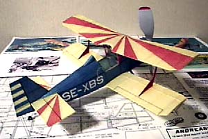
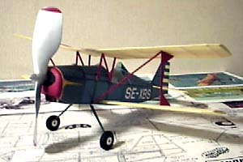

|  |  |
Model by Akihiro Danjo
Notes:
I had to finish building my model untill today because I have only one flying session in Jan,. I was barely in time this morning ! This is my second peanut model. First one is Peck Polymers Lacey M-10, but I have not flown one yet. So this is my first experience to fly a peanut model.
My model was 7.44g in weight (without rubber). But, as a reslt of trimming, it became 9.30g ! (1.86g nose weight !!) It is built to fly in left circles, because I guess it will be suitable to fly in a small and low ceiling site. Upper wing; 1/16 incidence, no warp, Lower wing; Right; 1/16 incidence, no warp, Left; 1/8 incidence, 1/16 washout, Thrust; 1 deg left, 3 deg down, Rudder; slight off set to left. No trim was needed except a lot of nose weight. It was cold, so I had to use fat and short rubber. Loop 13.9 x .098. More fat rubber was needed but, to my regret, I did not have one..... The ceiling height is 29.52 ft but it crimbed only 16 ft !
Notes for new times:
Fortunately, I could have a short flying session again and improve my time.
Trim changed, Lower wing, Right, add a little wing tip washout, Left, reduce washout 1/32, Thrust, add down 3+3=6deg! Rubber, .105x16.5in,. I found my model is very sensitive to the C/G position (=rubber weight).
Thank you Daniel Harstein for fine pictures.
Thank you Syme for hosting the contest.
First of all, I enjoyed myself very much !
Excuse my bad English.
Akihiro Danjo (Tokyo Japan)